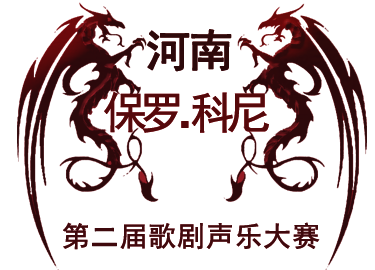

-
preliminary contest
2016年5月 23日~25日初赛选手在所报曲目中自选一首演唱
-
quarter-final
2016年5月 26日~27日进入半决赛的选手由评委在所报4首曲目中任选一首演唱， 如选手预角逐“威尔第作品最佳演唱奖”评委选择一首威尔第作品演唱
-
finals
2016年5月28日决赛选手需要演唱两首曲目，均由评委现场选择
-
The final concert
2016年5月29日评委有权根据选手的程度终止其演唱或要求选手加唱曲目比赛结束当日公布结果



赛事要求
点击下载报名表
大赛要求
1、参赛选手年龄截止2016年4月30号之前未满40周岁。
2、参赛选手需准备4首歌剧咏叹调,其中2首必须为意大利语作品。
3、比赛注册费500人民币，如参加“威尔第最佳演唱奖”的角逐需另加100人 民币。请选手于5月20日前交到大赛秘书处。
报名须知
1、一份填写完毕的【报名表】,下载地址: Download/table.docx
2、4张2寸同底免冠照片。
3、报名截止日期为2016年5月20日请提前通过电子邮箱寄出报名表,以确保组委会在截止前收到。
4、电子邮箱:luciano3325367@163.com。
5、比赛地址:中国河南新乡河南师范大学帕瓦罗蒂音乐厅。
6、咨询电话:张老师18637376187 魏老师18625908512报名电话0373--3326385。

赛日程安排

大赛评委
-
初赛
-
1、保罗科尼Paolo Coni 大赛艺术总监
-
2、马克 塔拉利Marco Taralli 意大利著名作曲家，Cesena 音乐学院教授
-
3、段续 河南师范大学音乐舞蹈学院院长
-
4、何军 南阳师范学院音乐系主任
-
-
复赛
-
1、保罗科尼Paolo Coni 大赛艺术总监
-
2、克里斯蒂娜 费拉里女士 意大利“威尔第之声”国际声乐比赛总监
-
3、马克 塔拉利Marco Taralli 意大利著名作曲家，Cesena 音乐学院教授
-
4、奕峰 著名男低音歌唱家 意大利共和国骑士勋章获得者
-
5、何军 南阳师范学院音乐系主任
-
-
决赛
-
1、保罗科尼Paolo Coni 大赛艺术总监
-
2、汤沐海国际著名指挥家中国赛区评委会主席
-
3、克里斯蒂娜 费拉里女士 意大利“威尔第之声”国际声乐比赛总监
-
4、马克 塔拉利Marco Taralli 意大利著名作曲家，Cesena 音乐学院教授
-
5、奕峰 著名男低音歌唱家 意大利共和国骑士勋章获得者
-
6、晁浩建 著名男高音歌唱家声乐教育家 解放军艺术学院特聘教授
-
7、刘捷 著名旅美男高音歌唱家 沈阳音乐学院教授
-
8、何军 南阳师范学院音乐系主任
-